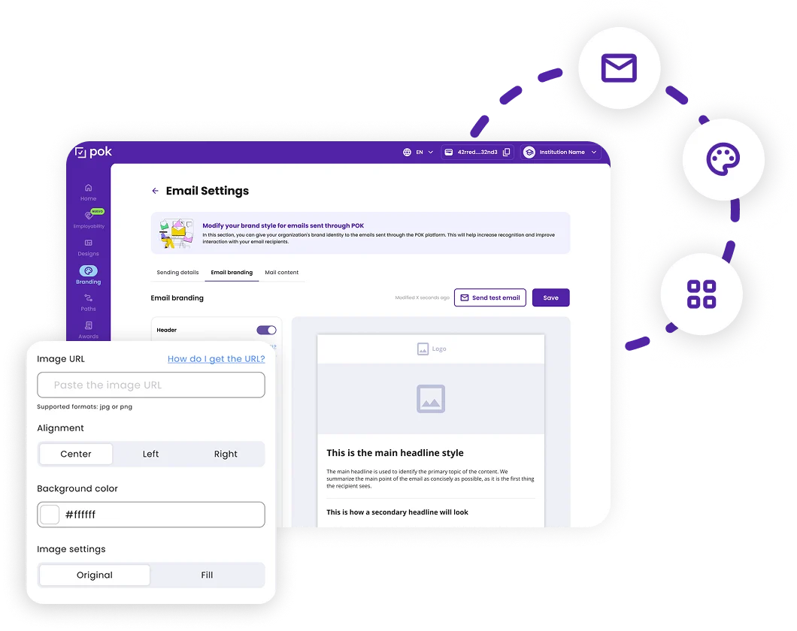
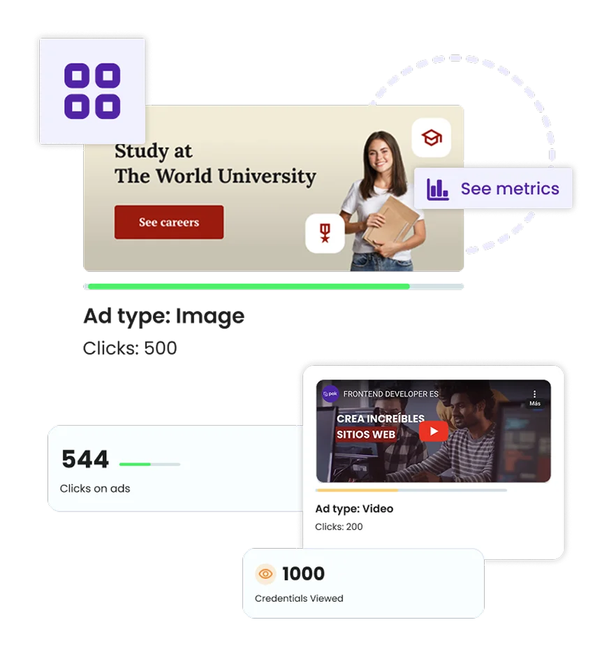
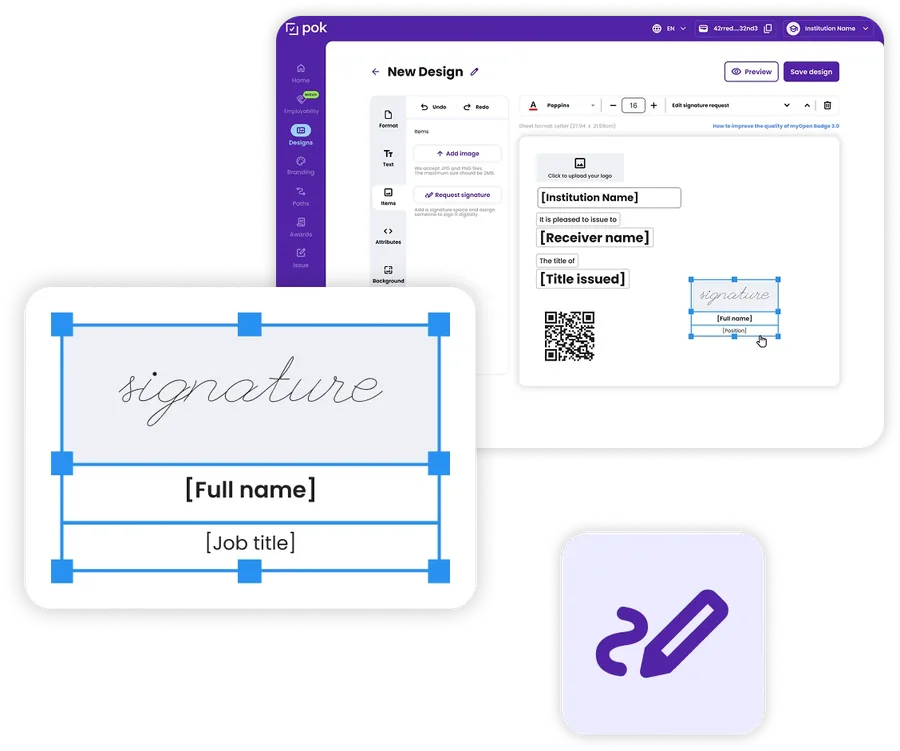
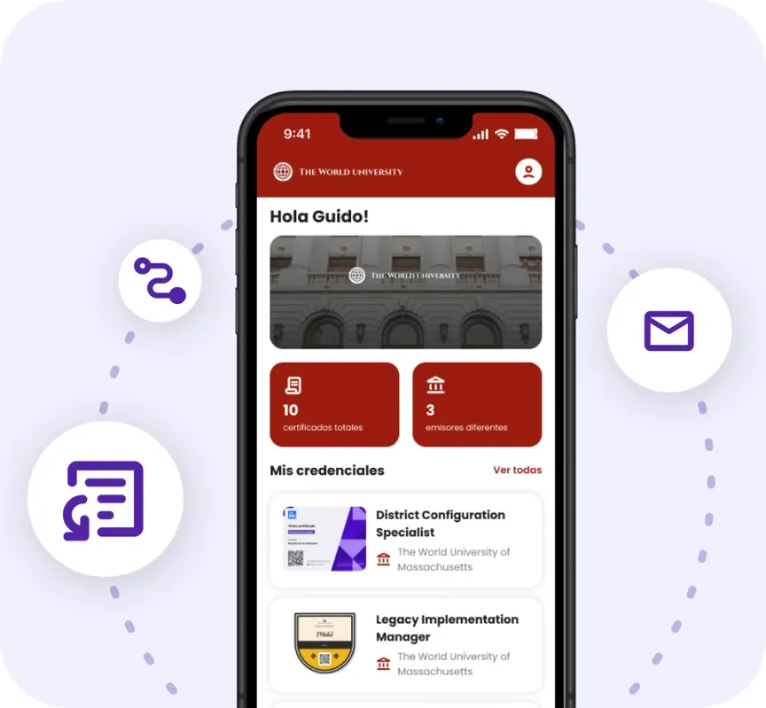
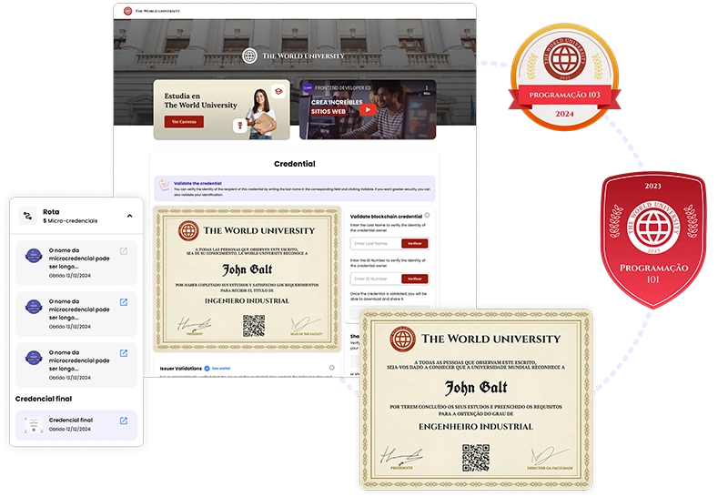
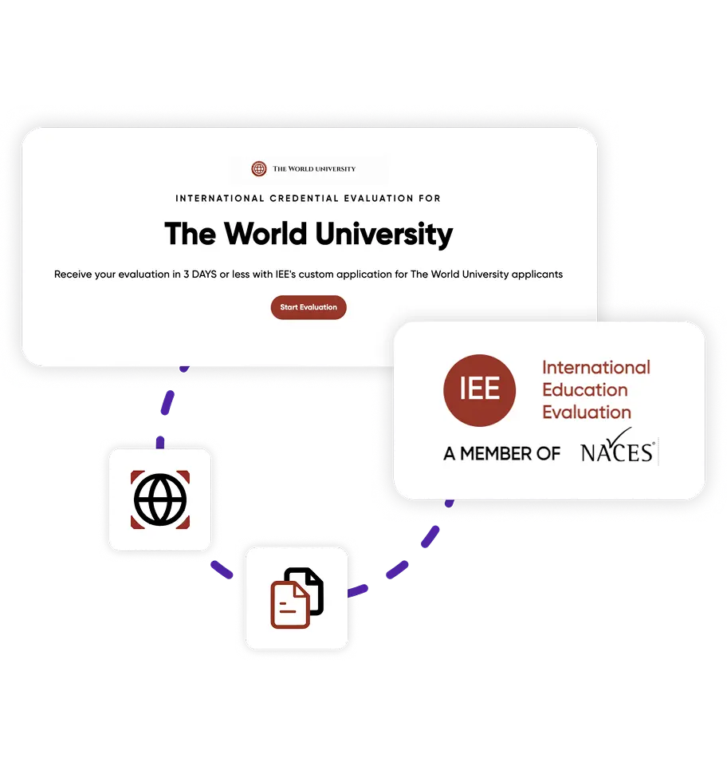

POK Features: Verifiable Digital Credentials, NFT and Microcredentials
POK is a global platform for issuing verifiable digital credentials, microcredentials and NFT certificates on blockchain — used by over 1,100 universities, companies, and governments in 19 countries. Certified by 1EdTech, ISO 27001 and SOC 2, compatible with Open Badges 3.0 and ELM/Europass.
LinkedIn Employability Tracking: Measure the Real Impact of Your Credentials
POK enables universities and companies to precisely and continuously understand the real impact of their training on the professional careers of their students and employees. Through real-time data linked to LinkedIn, institutions can analyze each student's individual progress, calculate cohort growth percentages, and adjust their educational programs based on concrete evidence.POK&s employability tracking also keeps the post-certification connection with graduates active, strengthening institutional engagement and program reputation in the job market.
With POK, you not only issue verifiable NFT digital credentials but transform the way you measure, communicate, and multiply the value of your training.

100% White-label digital credentials platform with full customization
With POK, your institution maintains its identity in every detail:
POK offers comprehensive white-label customization for the entire credential issuance and reception experience: custom domain, email branding, sending from your own SMTP domain, fully customizable credential display pages with banners, brand colors and multimedia content, export to Google Wallet and Apple Wallet with white-label, and a recipient wallet compatible with Open Badges 3.0 and ELM/Europass.
Every touchpoint with the student or employee reflects the institutional identity — not the platform’s.
POK is the only NFT digital credential platform that combines true with the flexibility to customize and control every touchpoint with your students or employees.
Marketing and AdTech: Turn Every Credential into a Growth Tool
With POK, every NFT digital credential you issue not only certifies achievements: it multiplies your brand’s reach and turns your students into ambassadors spreading your message to thousands or even millions on networks like LinkedIn.
POK integrates marketing and advertising features directly into the credential experience. Institutions can configure customizable banners with images, text, video, and links that appear on each credential's display page, track clicks and conversions through Google Ads integration, identify new prospects from interactions with shared credentials, and measure the real ROI of each certification program.
When a student shares their credential on LinkedIn, the institutional logo, message, and values travel with it — generating organic exposure and qualified leads at no additional cost.

POK is the only white-label, NFT, and LATAM leader platform combining secure credential issuance with a measurable and scalable marketing ecosystem. Turn every certification into a living campaign that boosts your reputation, employability, and revenue.

Advanced digital signature on your credentials: authenticity with legal backing
POK allows including advanced digital signature on each credential, validated by an authorized person before issuance. An authorized signer approves each credential before publication, linking the signature to the blockchain to ensure traceability and document integrity.
This functionality is comparable to leading solutions like DocuSign or Adobe Sign, integrated directly into the credential issuance workflow and compatible with internationally recognized digital signature standards.
POK combines the most reliable digital signature technology with the power of NFT credentials on blockchain, so every certificate you issue is unique, verifiable, and legally backed.
Credential Wallet with Custom Branding: Compatible with Open Badges 3.0
POK enables institutions to offer students and graduates a digital credential wallet with the institution’s brand — designed to securely store, organize, and share credentials in a verifiable way. The wallet stores NFT credentials issued by POK on public blockchain and also accepts credentials from any platform compatible with Open Badges 3.0, including Credly, Accredible, and Canvas Credentials.
This allows users to manage all their digital credentials in one place, with the visual identity of the issuing institution.

Unlike other platforms that just use blockchain as a marketing resource, POK issues real NFT credentials, with traceability, interoperability, and permanent value for the holder. With POK Wallet App your institution delivers not just a certificate, but a digital asset with identity, value, and global portability.

Learning Paths with POK: Connect Microcredentials and Boost Professional Development
POK enables universities and companies to design structured learning paths that connect microcredentials and digital certificates in a coherent educational journey. Each milestone is validated with a verifiable digital microcredential issued on public blockchain, and upon completing all modules, the student receives a final credential recognizing the full set of acquired skills.
What is a Learning Path?
A Learning Path is a structured training journey composed of different courses, workshops, or learning experiences. Each milestone is validated with a verifiable digital microcredential, and upon completing all modules, the student receives a final credential recognizing the full set of acquired skills.
Why implement Learning Paths with POK?
POK’s learning paths integrate natively with Moodle, Open edX, D2L Brightspace, and Blackboard, are compatible with Open Badges 3.0, and allow full customization with institutional branding. Each microcredential and the final credential are recorded on public blockchain, ensuring authenticity and permanent ownership. Institutions can monitor each student’s progress with real-time metrics and communicate the impact of their programs with verifiable data.
With POK, your Learning Paths are not just a training journey but a certified, measurable, and high-impact experience that boosts your institution’s reputation and your students’ professional future.
POK + IEE Equivalency: Global Academic Recognition
POK integrates with IEE Equivalency (International Education Evaluations), an official NACES member, to connect blockchain-based digital credentials with official academic evaluations recognized in the United States. Universities can issue digital credentials with POK while their students directly request U.S. academic equivalency evaluations through IEE.
This integration turns a digital credential into globally recognized academic value — from the blockchain to U.S. institutional verification, with authenticity, transparency, and global mobility for every student.

With POK + IEE Equivalency, institutions open the path to turning academic achievements into globally validated credentials.
POK Integrations: Moodle, Blackboard, Salesforce, API and more
POK integrates natively with the leading learning management systems and corporate platforms: Moodle, Blackboard, D2L Brightspace, Open edX, Salesforce, Canvas and more. LTI integrations allow credentials to be issued automatically upon course completion, with no manual intervention and no additional integration costs.
For institutions with specific needs, POK offers a that fully automates the credential issuance, query and revocation workflow. POK's API-first architecture ensures that any institutional system can connect with minimal development resources and without dependency on specialized technical teams.
Bulk Digital Credential Issuance: Simple, Fast and Unlimited
POK allows institutions to issue digital credentials in bulk to hundreds or thousands of recipients in a single process, with no user limit and no additional cost on the free plan. Institutions can upload recipient data via an Excel or CSV file, configure the credential design with their institutional branding and issue in seconds — with no technical team and no complex setup.
For more advanced workflows, POK offers automated issuance via API and automatic issuance integrated with LMS via LTI, allowing credentials to be issued directly upon course or program completion without manual intervention. Institutions can also schedule credential issuance in advance, setting the exact delivery date and time.
Frequently asked questions
Free Web2 version:
- 100% free with no user caps, no setup costs, and no expiration
- Credentials are verified via a unique link or QR code on the POK verification portal
- Fully customizable design with institution branding
- Compatible with Open Badges 3.0, W3C Verifiable Credentials, and ELM
- Each credential is registered as a unique Non-Fungible Token on Polygon and LacNet — public blockchains
- Decentralized cryptographic verification — verifiable by anyone, independently, without POK as intermediary
- Permanent traceability showing when and by whom the credential was issued
- Recipient owns the credential in their digital wallet, shareable on professional networks
- Credentials remain verifiable even if POK ceases to operate
Some platforms claim to use blockchain but actually only generate a cryptographic hash — an alphanumeric fingerprint — and store it on a private server or permissioned network. This is fundamentally different from registering credentials on a public blockchain:
- A hash alone does not contain the credential or its metadata — only a string that represents it
- If the server hosting the information disappears or is manipulated, verification breaks entirely
- A private or permissioned blockchain depends on a central administrator, reducing decentralization and resistance to manipulation
Public blockchain (e.g., Polygon, Ethereum):
- Open network where anyone can read and verify records independently
- Data distributed across thousands of nodes — maximum resistance to manipulation
- Credential verification does not depend on any single organization remaining operational
- Managed by an organization or consortium controlling who can access and record information
- Faster and cheaper to operate, but depends on a central administrator
- If the administrator disappears or restricts access, credential verification may be compromised
- Open Badges 3.0 — the most widely adopted open standard for digital badges and microcredentials, managed by 1EdTech
- W3C Verifiable Credentials — the internationally recognized data model for verifiable digital credentials, ensuring interoperability across platforms and systems
- European Learning Model (ELM/Europass) — the European framework ensuring interoperability in education and employment, enabling credential recognition across Europe
- 1EdTech TrustEd Credentials Framework — independently verified standards for data privacy, interoperability, and credential portability
Education (LMS):
- Moodle, Canvas, Blackboard, Brightspace (D2L), Google Classroom, Open edX
- Any LMS compatible with LTI (Learning Tools Interoperability) standard
- Workday, SAP SuccessFactors, Oracle HCM, BambooHR, Greenhouse
- Salesforce, HubSpot, Zoho
- Google Ads integration for advanced remarketing campaigns using credential engagement data
The result: automatic credential issuance triggered when a student passes a course, completes a program, or meets defined criteria — with no manual intervention required.
Open Badges 3.0, supported by POK, advances this significantly:
- Integrates natively with the W3C Verifiable Credentials (VC) model — enabling cryptographic verification of credential authenticity
- Improves interoperability with professional networks, LMS systems, and government platforms
- Supports enriched metadata including competency framework alignments, detailed criteria, and supporting evidence
- Compatible with the European Learning Model (ELM) for cross-border recognition
Credentials issued with POK can be directly integrated into the Europass profile of the holder, alongside other academic and professional documents. This is enabled through POK's compliance with the European Learning Model (ELM) — the technical framework underpinning Europass interoperability.
This compatibility is essential for:
- Students and professionals seeking opportunities across Europe
- Universities with international students or European institutional partnerships
- Organizations issuing credentials that need to be recognized by employers, universities, and authorities across multiple countries